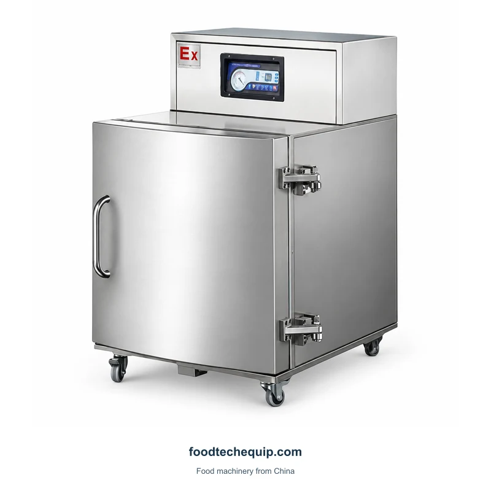
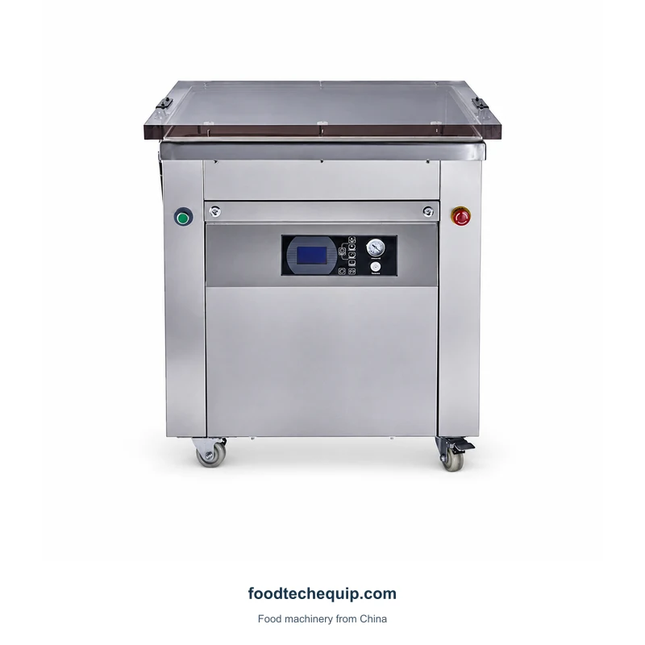
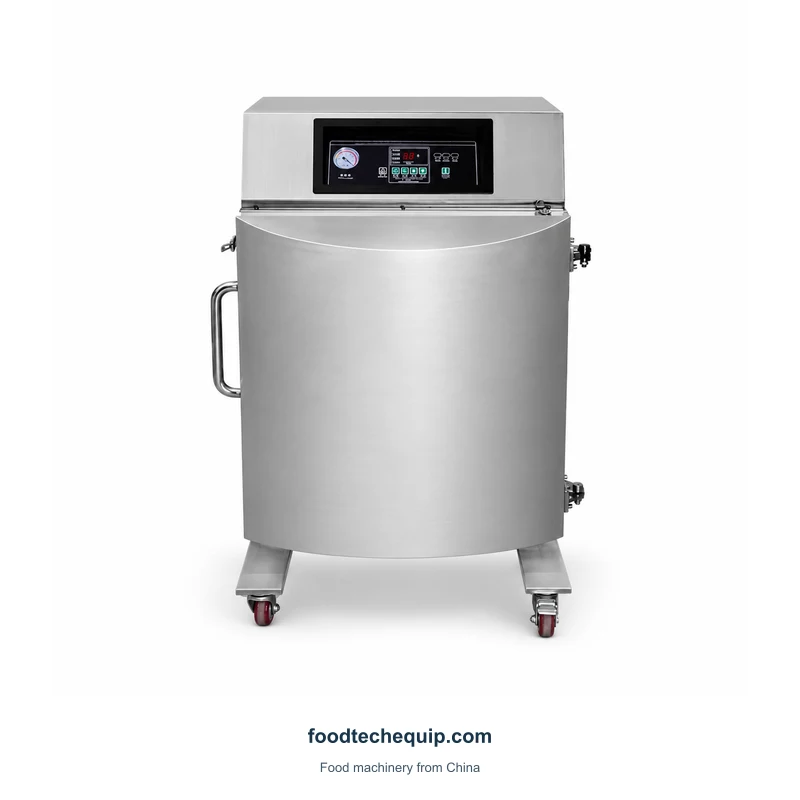
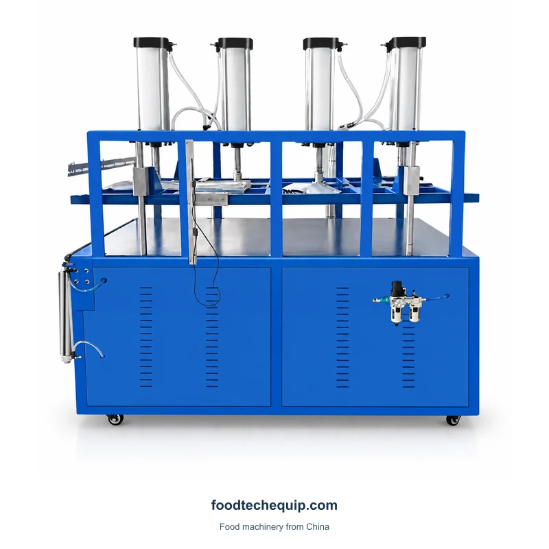

Vacuum Packaging
Cabinet Vacuum Packaging Machine
A front-loading cabinet vacuum packaging arrangement with upper controls.
View equipment
Select the image to view it larger.
A cabinet vacuum packaging layout intended for rice and grain packs.
Equipment selection · Installation guidance · Remote support
Explore product information ↓Describe the desired pack shape, portion weight and bag dimensions. Identify any forming support required for the final rice pack before discussing loading arrangements.
Choosing a Vacuum Packaging Layout ↗| Parameter | Value | Unit |
|---|---|---|
| Housing material | 304 stainless steel | — |
The filled pack must fit the working arrangement and remain supported during loading. Discuss the bag mouth and closing requirement alongside the complete package envelope. Treat any separate bag-closing task as its own process step.

A front-loading cabinet vacuum packaging arrangement with upper controls.
View equipment
A cabinet vacuum packaging layout with a front chamber door and upper controls.
View equipment
A compression vacuum packaging arrangement with overhead pneumatic frame.
View equipment